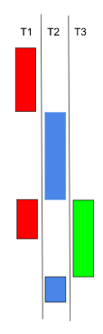
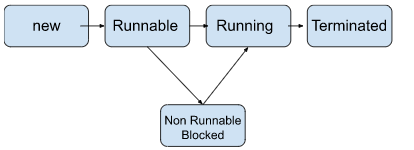
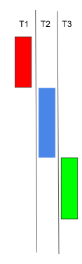

Multi-threading
কম্পিউটার এর সিপিইউ একসাথে একাধিক কাজ করতে পারেনা। একটি কাজ শেষ হওয়ার পর আরেকটি কাজ হয়। থ্রেড একই সাথে একাধিক কাজ করতে সাহায্য করে। একসাথে বলতে একটি কাজ কিছুক্ষন করে তার পর অন্য একটি কাজ করে। তার কিছুক্ষন পর আবার আরেকটি কাজ করে। তারপর আবার ধরে নেও যে আগের কাজে ফিরে যায় এভাবে চলতে থাকে।
যেমন এখানে এক একটি কাজ এক এক সময়ে চলেছে। কিন্তু কখনই একাধিক কাজ একই সময়ে চলেনি। এতাকেই বলে থ্রেডিং।
Thread এর একটি life-cycle আছে।
অর্থাৎ একটি থ্রেড তৈরি হওয়ার পর Runnable->Running->Non Runnable->Runnable এর লুপের ভেতর চলতে থাকে যতক্ষণ না থ্রেড এর কাজ শেষ হয়।

থ্রেডিং কয়েকভাবে করা যায়। আমরা তিন ভাবে থ্রেডিং শিখব।
১। Extending Thread Class
২। Implementing Runnable Interface
৩। Creating thread by passing runnable object
Extending Thread Class
নিচে একটি ক্লাস ABC কে দিয়ে Thread কে ইনহেরিট করা হয়েছে। Thread এ একটি মেথড আছে run()। এই run() মেথডকে override করে যা লিখা হবে তাই thread টি running থাকলে run হবে।
|
|
|
class ABC extends Thread{ |
এখানে x.join() মেথড যতক্ষণ x এর কাজ শেষ না হচ্ছে ততক্ষন অন্যান্য থ্রেড গুলোকে terminate হতে বাঁধা দেয়।
Implementing Runnable Interface
নিচের কোডে একটি ক্লাস ABC কে দিয়ে Runnable interface কে ইনহেরিট করা হয়েছে। তারপর মেইন মেথডে Thread এর অবজেক্টে ABC এর অবজেক্ট পাঠানো হয়েছে।
|
class ABC implements Runnable{ |
Creating thread by passing runnable object
এখানে আলাদা ভাবে ক্লাস তৈরি না করে anonymous class এর সাহায্যে Thread তৈরি করা হয়েছে।
|
public class Main {  |
এতক্ষন এক এক মেথড এক এক সময় চলছিল। এখন আমরা যদি এরকম করতে চাই যে যতক্ষণ না একটি থ্রেড শেষ না হচ্ছে ততক্ষন অন্য থ্রেড চলবেনা তাহলে কি করবো? উত্তর হচ্ছে ঐ মেথডটা কে synchronized করে দিবো। তাহলে একটি মেথড শেষ না হওয়া পর্যন্ত বাকি থ্রেড গুলো অপেক্ষা করবে।
নিচে একটি কোডের মাধ্যমে বোঝার চেষ্টা করি। কোডটি রান করে দেখতে হবে। তাহলেই আউটপুট থেকে বোঝা যাবে একটি থ্রেড সম্পূর্ণ হওয়ার পরই অন্য থ্রেড execute হচ্ছে।
|
public class Main { |
এর আউটপুট দেখলেই বোঝা যাবে যে আগে count বাড়তে বাড়তে সর্বোচ্চ হয়েছে তার পরে কমতে শুরু করেছে।
আরেকটি সহজ Threading এর উদাহরণ দিয়ে শেষ করবো।
আমরা চাইলে একটি নির্দিষ্ট সময়ের জন্য কোন টাস্ক কে থামিয়ে রাখতে পারি।
|
public class Main { |
এখানে start প্রিন্ট হওয়ার ৫ সেকেন্ড পর stop প্রিন্ট হচ্ছে।
***সমাপ্ত***
Created with the Personal Edition of HelpNDoc: Effortlessly Convert Your Word Doc to an eBook: A Step-by-Step Guide